Building reliable AI-agent infrastructure, developer tools, and production-grade open-source systems.
🚀 About Me
I'm cmyk-labs, an open-source contributor focused on reliable AI-agent infrastructure, long-horizon runtimes, and developer tooling. I enjoy turning agent concepts—scoped tools, durable state, recovery, and human-agent collaboration—into maintainable systems that can handle real-world workloads.
- 🤖 Building reliable agent infrastructure, developer tools, and production-grade AI systems
- 🔧 Contributing to bytedance/deer-flow, including user-scoped custom-agent dispatch through
task() - 🧭 Contributing to huangruiteng/loopx, advancing durable runtime milestones and bounded-segment reporting
- 🏆 Kaggle Bronze Medalist with national awards in data challenges and mathematical modeling
- 🌱 Open to AI-agent and LLM-infrastructure collaboration
📦 Open Source
|
A durable agent runtime playground for scoped tools, resumable tasks and long-running workflows. Python
|
cmyk-labs/adaptive-rag-toolkit
A practical retrieval toolkit for hybrid search, reranking and evidence-backed answers. TypeScript
|
✨ Featured Contributions

An open-source SuperAgent harness that researches, codes, and creates. With the help of sandboxes, memories, tools, skills and subagents, it handles different levels of tasks that could take minutes to hours. |
|
Task(subagent_type="my-agent") now resolves user-scoped custom agents as a third registry tier: built-ins → operator-defined config.yaml subagents.custom_agents → the caller's own /api/agents agents. Later tiers never shadow earlier ones, so operator config stays authoritative. |

An open, provider-neutral, stateful control plane for long-horizon agents, purpose-built for loop engineering. It runs atop any agent harness to provide durable state, semantic decision-making, governance, recovery, and human-agent collaboration. |
|
Adds a provider-neutral runtime producer that consumes a bounded, durable rollout-event window. Promotes deduplicated todo_complete thresholds or durable autonomous_replan_recorded refreshes into the existing bounded_segment_milestone trigger path. Adds bounded_segment_milestone as a reportable periodic-report trigger. Requires a bounded segment reference and validated transition, with materiality gated on segment_completed or replan_entered plus durable writeback. |
🔗 More Contributions
| Repository | Pull request | Summary | Status | Stars |
|---|---|---|---|---|
| demo/agent-runtime | #128 · Improve scoped tool routing | Routes tool calls through the correct user-scoped agent while preserving tool restrictions. | Merged |
12.8k |
| demo/rag-engine | #86 · Add resumable ingestion checkpoints | Persists bounded ingestion progress so interrupted document pipelines can resume safely. | Open |
8.2k |
| demo/model-gateway | #42 · Document provider fallback contract | Clarifies provider fallback behavior and adds practical integration examples. | Closed |
2.4k |
🏆 Honors
- 🥉 Kaggle Bronze Medal
- 🥇 National Data Challenge — Graduate Division, National First Prize
- 🏅 China Postgraduate Mathematical Contest in Modeling — National Third Prize
- 📜 Two registered software copyrights for AI and data applications
📫 Contact
- GitHub — @cmyk-labs
- Technical Blog — CSDN